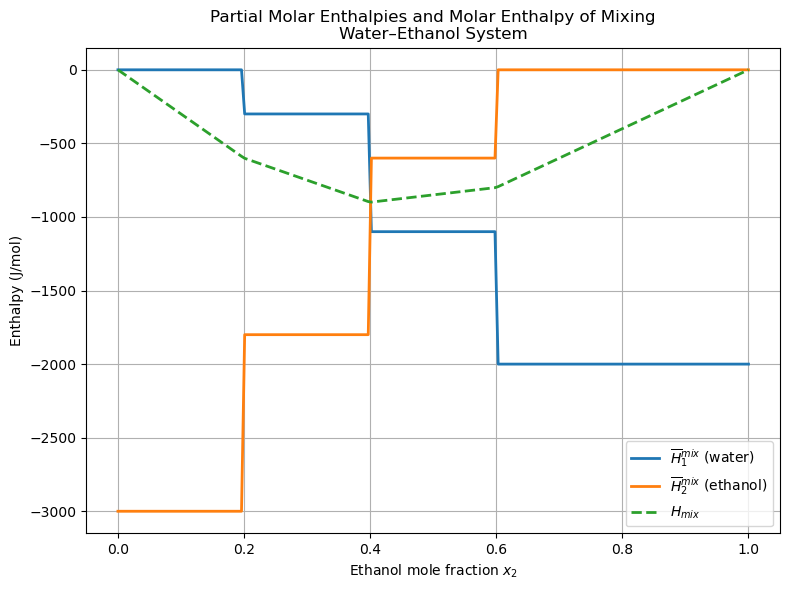
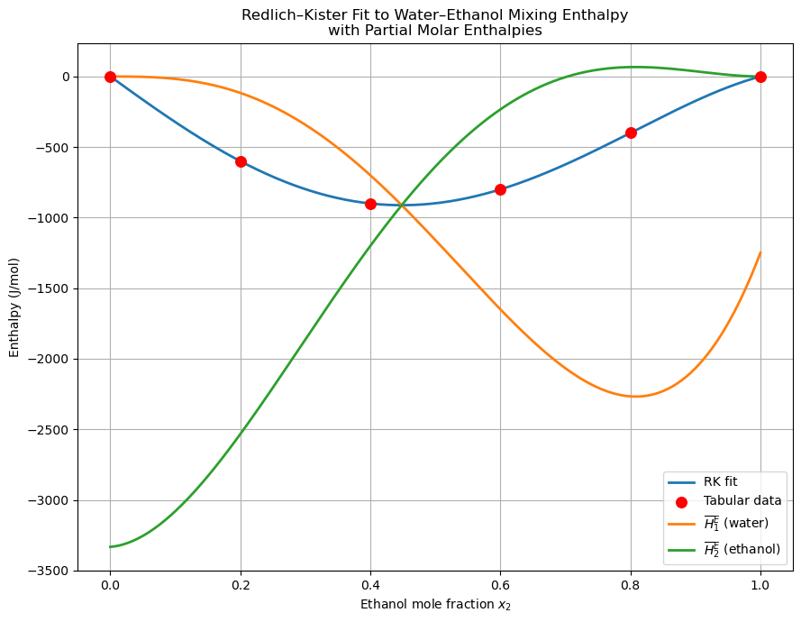

Introduction to Mixtures#
Mixtures are fluids materials composed of more than one single component, \(C\). Mixtures are incredibly important to chemical engineering as many crude products include crude oil are composed of more than one component. Useful products that are sold must be isolated from these complex mixtures. We perform these separations using unit operations similar to those that we have encountered already (ex., the flash drum) and therefore, in order to predict the behavior of these fluid mixtures and optimize their separation, we need to extend our existing thermodynamic frameworkk for single component fluids to mixtures of more than one component.
In this lecture, we will focus on some of the basics that we need to describe the properties of mixtures. These include the:
Species Balance Expression
Property Change of Mixing
Partial Molar Property Definition
Species Balance Expression#
The differential form of the balance expression is given as:
\(\quad\quad \dfrac{d\theta}{dt}=\sum_k\dot{\theta}_k+\dot{\theta}_{gen}\)
Substituting the number of moles of species \(i\), \(N_i\), for \(\theta\), we arrive at the statement of the species balance expression:
\(\quad\quad \dfrac{dN_i}{dt}=\sum_k(\dot{N_i})_k+\dot{N}_{i,gen}\)
Definitions of Mixtures#
Gibb’s Phase Rule states that the degrees of freedom, \(DOF\), is given as:
where
\(P\) is the number of phases present in the system
\(C\) is the number of components
Up until this point, we have considered only two cases:
\(P=1\), \(C=1\), where the \(DOF=2\)
\(P=2\), \(C=1\), where the \(DOF=1\)
Mixtures are defined as phases that contain more than one component, \(C>1\). We can see from Gibb’s Phase rule that the number of degrees of freedom increase with the number of components such that for \(N\) components in a 1-phase mixture, we have:
Up to this point in Thermodyanmcis, we have relied on solving problems using molar properties that can be described based on the state of the substance. For mixtures, we will need to develop a framework to describe molar properties both as a function of state variables but also as a function of composition.
The Partial Molar Property#
We will use the concept of the mole fraction as a starting point to discuss the composition of a mixture. The molar fraction of a species \(i\) in a mixture is typically denoted as \(x_i\) and is defined as:
which is also written as:
where \(N=\sum_i^C N_i\) is the total number of moles.
To define the properties of mixtures, we must introduce a new property, the partial molar property. The partial molar property is defined for a given \(T\), \(P\), and composition (denoted as \(\underline{x}\)):
This deceptively simple definition, has important implications for mixtures properties that will be defined later, but an important part of the partial molar property is that is that it can be calculated from measurements of the molar property by taking the following derivative:
This notation is challenging, below we do an example that addresses the physical meaning of these differentials
Property Changes Upon Mixing#
What makes the partial molar property so important is that it is defined for each species to be a function of composition and that function is unique for each species in the mixture. This is an important observation. When we form mixtures of different substances the properties of the mixtures are changes from the properties of the individual species and from what we might have expected from the linear combination of the properties of the individual components combined. A simple example of this is that the miscibility of alcohols in water decreases with increasing molecular weight. Ethanol and water are miscible, but octanol and water are almost immiscible. Mixtures of alcohols and waters therefore do not obey our intuition derived from the pure component properties.
Mathematically, we say that there is a property change that occurs upon forming the mixture. We define that property change as:
where
\(\sum_i x_i\underline{\theta_i}\big(T,P\big)\) is the linear combination of the molar properties of of the individual species in the mixture at the specified Temperature and Pressure.
\(\Delta_{mix} \theta \big(T,P,\underline{x}\big)\) is a function that depends on the mixtures state and its composition.
By taking the difference between Eq (ref 1) to Eq (ref 2), we can see the relationship between the property change upon mixing and the partial molar property is given as:
which can be rearranged to be:
Gibb’s Phase Rule:#
A useful property of mixtures is that because the \(DOF=C+1\) for one phase mixtures, we can specify up to two volumetric variables and \(C-1\) compositions before the number of \(DOF\) are specified. The implication of this statement is that the partial molar properties defined above are not fully independent of one another. As for mixtures, we generally care only about effects of \(T\), \(P\), and \(\underline{x}\) on the partial molar property.
To assess generalized changes to the partial molar properties in response to changes in \(T\), \(P\), and \(\underline{x}\), we can write:
where the summation is carried forward over \(C-1\) components of the mixture until the \(DOF\) are fully specified.
We can also write for any molar property, \(\underline{\theta}\), at a fixed \(T\) \(P\) that:
The above can be shown to be true if we consider that \(\theta=\sum_i N_i \bar{\theta}_i\), then if we differentiate that expression, we find that:
\(\quad d\theta=\sum_iN_i d\bar{\theta}_i + \sum_i \bar{\theta}_i dN_i\)
We can also write that at constant \(T\) and \(P\) that:
\(\quad d\theta=\sum_i^{C}\bigg(\dfrac{\partial \theta}{\partial N_i}\bigg)_{T,P,N_{j\ne i}}=\sum_i \bar{\theta}_i dN_i\)
If we take the difference of the above, we arrive at the simple form of the Gibbs-Duhem Equation which says that at constant \(T\) and \(P\) there is a relationship that links partial molar properties together.
If substitute our general expressure for the partial molar property we can further show that:
which for a binary mixture can be written as:
Using the Gibbs-Duhem Equation it can be shown that for a binary mixture, the partial molar property is given as:
and
which can be more convenient for computation in some cases.
Ideal Mixing vs. Non-Ideal Mixing#
An ideal mixture is one where the \(\bar{\theta}_i=\underline{\theta}_i\) and \(\Delta\theta=0\). Ideal mixtures occur when the species being mixed have similar properties. We will see that this is most often the case when the mixture is a low pressure vapor or when the mixture is formed from two species that have similar molecular volumes and interactions (ex., mixtures of hexane and octane approximate an ideal mixture).
Conversely a non-ideal mixture is one where significant heat is evolved as a consequence of the mixing process or the density of mixture is significantly modified from what would be expected of an ideal mixture. Examples of highly non-ideal mixtures are solutions of aqueous sulfuric acid. At one atmosphere, the boiling point of sulfuric acid and water mixture can change from \(100^{o}C\) for pure water to \(w=50 wt\%\) the boiling point is \(130^{o}C\). At atmospheric pressures, sulfuric acid alone is a superheated vapor!
Notation for Mixture Composition#
Mixture composition is often tabulated in a variety of different ways. They are quickly summarized below:
mole fraction, denoted \(x_i=\dfrac{N_i}{\sum_i N_i}\)
weight fraction, denoted \(w_i=\dfrac{\text{mass of species i}}{\text{total mass of mixture}}\)
volume fraction, denoted \(\phi_i=\dfrac{\text{volume of species i}}{\text{total volume of mixture}}\)
concentration, denoted \(C_i=\dfrac{\text{mass/moles of species i}}{\text{total volume of mixture}}\)
Each definition has its own purpose for scientific communication and taking care to understand units is critical to understanding how data is presented and for calculations in this course.
Mass, Energy, and Entropy Balance Expressions for Mixtures:#
Mass Balance#
recall that conservation of mass requires:
where \(i\) is associated with the \(i\)th flowing input/output stream.
In addition to satisfying this equation, we can now write the species balance expression:
The first term is associated w/ the flow of species entering/exiting the system carried by the ith stream across the system boundary
The second term is associated w/ the generation/consumption of the \(k\)th species by the \(j\) chemical reaction with stoichiometric coefficient \(v_{kj}\) and rate of reaction \(X\). The acknowledgement of the fact that
\(N = \sum_k N_k\)
at all times connects the species balance to the conservation of mass
Energy Balance#
This equation remains unchanged, but we need to acknowledge that
and that
Entropy Balance#
This equation remains unchanged, but we need to acknowledge that
and that
The entropy generation term must account for chemical reactions to be most general:
where \(\phi = \nabla \dot{\gamma}\)
Example - Analytical#
Lets do an example to deal with this notation. You are told that the internal energy of a binary mixture is given as:
\(\quad \underline{U}(T,P,x_1,x_2)=x_1\underline{U}_1(T,P)+x_2\underline{U}_2(T,P)+a_0x_1x_2\)
Compute \(\Delta_{mix} \underline{U}\), \(\bar{U}_1\) and \(\bar{U}_2\):
First, we need to rewrite the above equation as:
\(\quad \underline{U}(T,P,x_1,x_2)=\dfrac{N_1}{N_1+N_2}\underline{U}_1(T,P)+\dfrac{N_2}{N_1+N_2}\underline{U}_2(T,P)+a_0\dfrac{N_1N_2}{(N_1+N_2)^2}\)
which can now be differentiated as for species 1 as:
\(\quad \dfrac{\partial}{\partial N_1}\bigg|_{T,P,N_2}\bigg((N_1+N_2)\underline{U}(T,P,x_1,x_2)\bigg)= \dfrac{\partial}{\partial N_1}\bigg|_{T,P,N_2}\bigg(N_1\underline{U}_1(T,P)+N_2\underline{U}_2(T,P)+a_0\dfrac{ N_1 N_2}{N_1+N_2}\bigg)\)
differentiating we get:
\(\quad \bar{U}_1=\underline{U}_1(T,P)+a_0\dfrac{N_2}{N_1+N_2}-a_0\dfrac{N_1N_2}{(N_1+N_2)^2}\)
which can be rewritten as:
\(\quad \bar{U}_1(T,P,x_1)=\underline{U}_1(T,P)+a_0(x_2-x_1x_2)=\underline{U}_1(T,P)+a_0x_2^2\)
or
\(\quad \bar{U}_1(T,P,x_1)-\underline{U}_1(T,P)=a_0x_2^2\)
It follows then that:
\(\quad \bar{U}_2(T,P,x_2)-\underline{U}_2(T,P)=a_0x_1^2\)
Example - Numerical Example#
1. Problem setup#
We consider liquid mixtures of water (1) and ethanol (2) at fixed temperature and pressure. We’re given molar enthalpy of mixing (or excess molar enthalpy) data, \(\Delta H_{\text{mix}}\) per mole of mixture, as a function of ethanol mole fraction \(x_2\).
Assume the following tabulated data at \(T = \text{const}\), \(P = \text{const}\):
\(x_2\) (ethanol) |
\(\Delta H_{\text{mix}}\) (J/mol of mixture) |
|---|---|
0.0 |
0 |
0.2 |
\(-600\) |
0.4 |
\(-900\) |
0.6 |
\(-800\) |
0.8 |
\(-400\) |
1.0 |
0 |
We want to:
Compute the molar enthalpy change upon mixing for a specific composition.
Estimate the partial molar enthalpies of mixing \(\overline{H}_1^{\text{mix}}\) and \(\overline{H}_2^{\text{mix}}\) at a chosen composition using the tabular data.
2. Total enthalpy change upon mixing#
For a binary mixture with total moles \(N = N_1 + N_2\), the total enthalpy change upon mixing is
where \(\Delta H_{\text{mix}}(x_2)\) is the molar enthalpy of mixing (per mole of mixture).
Example: 1 mol water + 1 mol ethanol#
Moles: $\( N_1 = 1.0,\quad N_2 = 1.0,\quad N = 2.0 \)$
Mole fraction of ethanol: $\( x_2 = \frac{N_2}{N} = \frac{1.0}{2.0} = 0.5 \)$
Our table doesn’t have \(x_2 = 0.5\), so we linearly interpolate between 0.4 and 0.6:
At \(x_2 = 0.4\): \(\Delta H_{\text{mix}} = -900\) J/mol
At \(x_2 = 0.6\): \(\Delta H_{\text{mix}} = -800\) J/mol
Slope between 0.4 and 0.6:
Difference from 0.4 to 0.5 is \(0.1\), so
Then total enthalpy change:
So mixing 1 mol water and 1 mol ethanol at these conditions releases about 1.7 kJ of heat.
3. Partial molar enthalpies of mixing from tabular data#
For a binary mixture, the molar enthalpy of mixing is related to the partial molar enthalpies of mixing by
and the Gibbs–Duhem relation gives
A convenient working formula (in terms of composition derivatives) is
where \(x_1 = 1 - x_2\).
We’ll estimate the derivative using finite differences from the table.
Choose composition: \(x_2 = 0.4\)#
From the table:
At \(x_2 = 0.2\): \(\Delta H_{\text{mix}} = -600\) J/mol
At \(x_2 = 0.4\): \(\Delta H_{\text{mix}} = -900\) J/mol
At \(x_2 = 0.6\): \(\Delta H_{\text{mix}} = -800\) J/mol
Use a central difference at \(x_2 = 0.4\):
Now:
Mole fractions: $\( x_2 = 0.4,\quad x_1 = 1 - 0.4 = 0.6 \)$
Molar enthalpy of mixing at 0.4: $\( \Delta H_{\text{mix}}(0.4) = -900\ \text{J/mol} \)$
Compute partial molar enthalpies of mixing:
Water (component 1): $\( \overline{H}_1^{\text{mix}} = \Delta H_{\text{mix}} - x_2 \left(\frac{d\Delta H_{\text{mix}}}{dx_2}\right) = -900 - 0.4 \times (-500) = -900 + 200 = -700\ \text{J/mol} \)$
Ethanol (component 2): $\( \overline{H}_2^{\text{mix}} = \Delta H_{\text{mix}} + x_1 \left(\frac{d\Delta H_{\text{mix}}}{dx_2}\right) = -900 + 0.6 \times (-500) = -900 - 300 = -1200\ \text{J/mol} \)$
Consistency check#
Check that the mole‑fraction‑weighted average recovers \(\Delta H_{\text{mix}}\):
which matches the tabulated \(\Delta H_{\text{mix}}(0.4)\).
4. Workflow for Computation#
Start from tabulated \(\Delta H_{\text{mix}}(x_2)\) data for water–ethanol.
Pick a composition and, if needed, interpolate to get \(\Delta H_{\text{mix}}\) at that \(x_2\).
Compute total enthalpy change for a given number of moles: $\( \Delta H_{\text{mix, total}} = n \,\Delta H_{\text{mix}}(x_2) \)$
Estimate the derivative \(\frac{d\Delta H_{\text{mix}}}{dx_2}\) at that composition using finite differences from the table.
Use the partial molar formulas: $\( \overline{H}_1^{\text{mix}} = \Delta H_{\text{mix}} - x_2 \left(\frac{d\Delta H_{\text{mix}}}{dx_2}\right) \)\( \)\( \overline{H}_2^{\text{mix}} = \Delta H_{\text{mix}} + x_1 \left(\frac{d\Delta H_{\text{mix}}}{dx_2}\right) \)$
Check consistency via $\( \Delta H_{\text{mix}} = x_1 \,\overline{H}_1^{\text{mix}} + x_2 \,\overline{H}_2^{\text{mix}} \)$
import numpy as np
import pandas as pd
from scipy.interpolate import interp1d
import matplotlib.pyplot as plt
# ------------------------------------------------------------
# 1. Tabulated data: ethanol mole fraction vs molar enthalpy of mixing (J/mol)
# ------------------------------------------------------------
data = pd.DataFrame({
"x2": np.array([0.0, 0.2, 0.4, 0.6, 0.8, 1.0]),
"Hmix": np.array([0, -600, -900, -800, -400, 0]) # J/mol of mixture
})
# Interpolator for Hmix(x2)
Hmix_interp = interp1d(data["x2"], data["Hmix"], kind="linear", fill_value="extrapolate")
# ------------------------------------------------------------
# 2. Finite-difference derivative dH/dx2
# ------------------------------------------------------------
def dHdx(x2, data):
x = data["x2"].values
H = data["Hmix"].values
# If x2 is exactly in the table, use central difference
if x2 in x:
idx = np.where(x == x2)[0][0]
if 0 < idx < len(x) - 1:
return (H[idx + 1] - H[idx - 1]) / (x[idx + 1] - x[idx - 1])
# Otherwise use small-step numerical derivative
h = 1e-4
return (Hmix_interp(x2 + h) - Hmix_interp(x2 - h)) / (2 * h)
# ------------------------------------------------------------
# 3. Partial molar enthalpies
# ------------------------------------------------------------
def partial_molar_enthalpies(x2):
x1 = 1 - x2
Hm = float(Hmix_interp(x2))
dH = dHdx(x2, data)
Hbar1 = Hm - x2 * dH
Hbar2 = Hm + x1 * dH
return Hbar1, Hbar2
# ------------------------------------------------------------
# 4. Sweep compositions and compute partial molar properties
# ------------------------------------------------------------
x2_grid = np.linspace(0, 1, 200)
Hbar1_grid = []
Hbar2_grid = []
Hmix_grid = []
for x2 in x2_grid:
Hbar1, Hbar2 = partial_molar_enthalpies(x2)
Hbar1_grid.append(Hbar1)
Hbar2_grid.append(Hbar2)
Hmix_grid.append(float(Hmix_interp(x2)))
Hbar1_grid = np.array(Hbar1_grid)
Hbar2_grid = np.array(Hbar2_grid)
Hmix_grid = np.array(Hmix_grid)
# ------------------------------------------------------------
# 5. Plot partial molar enthalpies and molar enthalpy of mixing
# ------------------------------------------------------------
plt.figure(figsize=(8,6))
plt.plot(x2_grid, Hbar1_grid, label=r'$\overline{H}_1^{mix}$ (water)', linewidth=2)
plt.plot(x2_grid, Hbar2_grid, label=r'$\overline{H}_2^{mix}$ (ethanol)', linewidth=2)
plt.plot(x2_grid, Hmix_grid, '--', label=r'$H_{mix}$', linewidth=2)
plt.xlabel('Ethanol mole fraction $x_2$')
plt.ylabel('Enthalpy (J/mol)')
plt.title('Partial Molar Enthalpies and Molar Enthalpy of Mixing\nWater–Ethanol System')
plt.legend()
plt.grid(True)
plt.tight_layout()
plt.show()

import numpy as np
import matplotlib.pyplot as plt
# ------------------------------------------------------------
# 1. Tabular data (water–ethanol mixing enthalpy)
# ------------------------------------------------------------
x2_data = np.array([0.0, 0.2, 0.4, 0.6, 0.8, 1.0])
Hmix_data = np.array([0, -600, -900, -800, -400, 0]) # J/mol
# ------------------------------------------------------------
# 2. Build the regression matrix for RK fit
# ------------------------------------------------------------
def rk_basis(x2):
x1 = 1 - x2
return np.column_stack([
x1 * x2,
x1 * x2 * (x1 - x2),
x1 * x2 * (x1 - x2)**2
])
X = rk_basis(x2_data)
# Solve least squares: minimize ||X A - Hmix||
A_fit, *_ = np.linalg.lstsq(X, Hmix_data, rcond=None)
print("Fitted RK coefficients (A0, A1, A2):")
print(A_fit)
# ------------------------------------------------------------
# 3. RK model and derivative
# ------------------------------------------------------------
def H_excess(x2):
x1 = 1 - x2
A0, A1, A2 = A_fit
return (A0 * x1 * x2 +
A1 * x1 * x2 * (x1 - x2) +
A2 * x1 * x2 * (x1 - x2)**2)
def dHdx(x2):
x1 = 1 - x2
A0, A1, A2 = A_fit
# derivative of x1*x2 = (1-x2)*x2
d_pref = (1 - 2*x2)
# polynomial and its derivative
poly = A0 + A1*(x1 - x2) + A2*(x1 - x2)**2
d_poly = A1*(-2) + A2*2*(x1 - x2)*(-2)
return d_pref * poly + x1 * x2 * d_poly
# ------------------------------------------------------------
# 4. Partial molar enthalpies
# ------------------------------------------------------------
def partial_molar_enthalpies(x2):
x1 = 1 - x2
Hm = H_excess(x2)
dH = dHdx(x2)
Hbar1 = Hm - x2 * dH
Hbar2 = Hm + x1 * dH
return Hbar1, Hbar2
# ------------------------------------------------------------
# 5. Sweep compositions and compute curves
# ------------------------------------------------------------
x2_grid = np.linspace(0, 1, 300)
H_grid = np.array([H_excess(x) for x in x2_grid])
Hbar1_grid = np.array([partial_molar_enthalpies(x)[0] for x in x2_grid])
Hbar2_grid = np.array([partial_molar_enthalpies(x)[1] for x in x2_grid])
# ------------------------------------------------------------
# 6. Plot: RK fit + tabular data + partial molars
# ------------------------------------------------------------
plt.figure(figsize=(9,7))
plt.plot(x2_grid, H_grid, label="RK fit", linewidth=2)
plt.scatter(x2_data, Hmix_data, color="red", s=70, zorder=5, label="Tabular data")
plt.plot(x2_grid, Hbar1_grid, label=r"$\overline{H}_1^E$ (water)", linewidth=2)
plt.plot(x2_grid, Hbar2_grid, label=r"$\overline{H}_2^E$ (ethanol)", linewidth=2)
plt.xlabel("Ethanol mole fraction $x_2$")
plt.ylabel("Enthalpy (J/mol)")
plt.title("Redlich–Kister Fit to Water–Ethanol Mixing Enthalpy\nwith Partial Molar Enthalpies")
plt.grid(True)
plt.legend()
plt.tight_layout()
plt.show()
Fitted RK coefficients (A0, A1, A2):
[-3593.75 -1041.66666667 1302.08333333]
